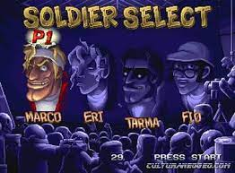
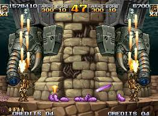
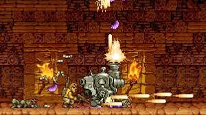
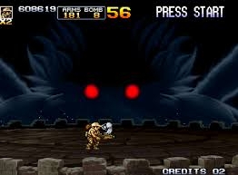

Año 2035. El mundo vuelve a vivir una época de paz. El progreso está a la orden del día, y son innumerables los nuevos descubrimientos en tecnología y otros campos de la ciencia. Los ejércitos se modernizan, gracias a fábricas con tecnología punta, y los laboratorios investigan nuevos tipos de armas, nuevas actualizaciones y mejoras que permitan proveer al ejército con armamento mucho más eficaz.
Uno de estos laboratorios es el que se encarga del diseño y desarrollo de la próxima generación de Metal Slug. Como es evidente, es considerado de gran relevancia y por lo tanto, es mantenido en el más estricto de los secretos. Un día es atacado por unas fuerzas misteriosas, las cuales consiguen robar un disco de datos comprometedores que contiene toda la información relativa al nuevo proyecto de Metal Slug. Marco y Tarma son llamados a filas, para incorporarse a una nueva misión que consistirá en conseguir cuanto antes dicho disco de datos. No es para menos, pues si consiguen descifrar el contenido.
Mientras tanto, Eri y Fio se encuentran investigando una organización paramilitar llamada Ejército de Ptolemaic. No se conocen demasiados datos sobre este ejército, ni siquiera cuánto hace que está activo. Tan solo se sabe que tiene una fuerte influencia a nivel mundial, que el cuartel general nunca se mantiene en un lugar demasiado tiempo, y que su líder es un misterioso hombre llamado Ptolemaios. El destino querría que nunca hubiese un encuentro real entre este líder y nuestros protagonistas.
Nuestras dos protagonistas descubren que dicho ejército está atacando una serie de ruinas de carácter histórico alrededor del mundo, entre las que se encuentran las ruinas del Corredor de Fuego. Sabiendo que se encuentran allí, el Ejército Rebelde va en su busca, pero es ampliamente repelido por los nativos del lugar y por Metal Slug gigantescos. Este hecho revela pues, que el enemigo responsable del robo del disco de datos no es otro que el Ejército de Ptolemaic.
Las Fuerzas Rebeldes deciden entonces llevar a cabo un segundo asalto en el Corredor de Fuego, con mejor armamento y trabajando en conjunto con el Ejército Regular. Una vez comienzan los combates, las fuerzas de Morden no encuentran demasiada resistencia y avanzan repeliendo al Ejército de Ptolemaic del corredor. Pero durante una de los combates se desentierra una máscara mística que acaba siendo encontrada por uno de los nativos. Al ponerse la máscara, un poder demoníaco le invade por completo.
Poco después la rebelión se cruza con un extraño hombre enmascarado, no consciente del poder que posee. En ese momento, este hombre toma el control de los Ptolemaic, y otorga su poder a más de los suyos, de modo que en un instante, innumerables nativos enmascarados, idénticos todos ellos, se ven junto a los soldados de Ejército de Ptolemaic y los Metal Slugs del Ejército Regular.
La rebelión finalmente acorrala y lucha contra el villano hasta vencerlo, pero no lo suficientemente rápido. Sin poder evitarlo, un demonio conocido como Scyther entra en el plano mortal, ¡se trata del ser que estaba encerrado en la máscara! La lucha es encarnizada, pero el ejército se las arregla para expulsar al demonio al más allá tras un combate feroz, poniendo así fin a la Guerra Ptolemaic. Los nativos y fuerzas restantes se unen al Ejército Regular para destruir a la rebelión.
  